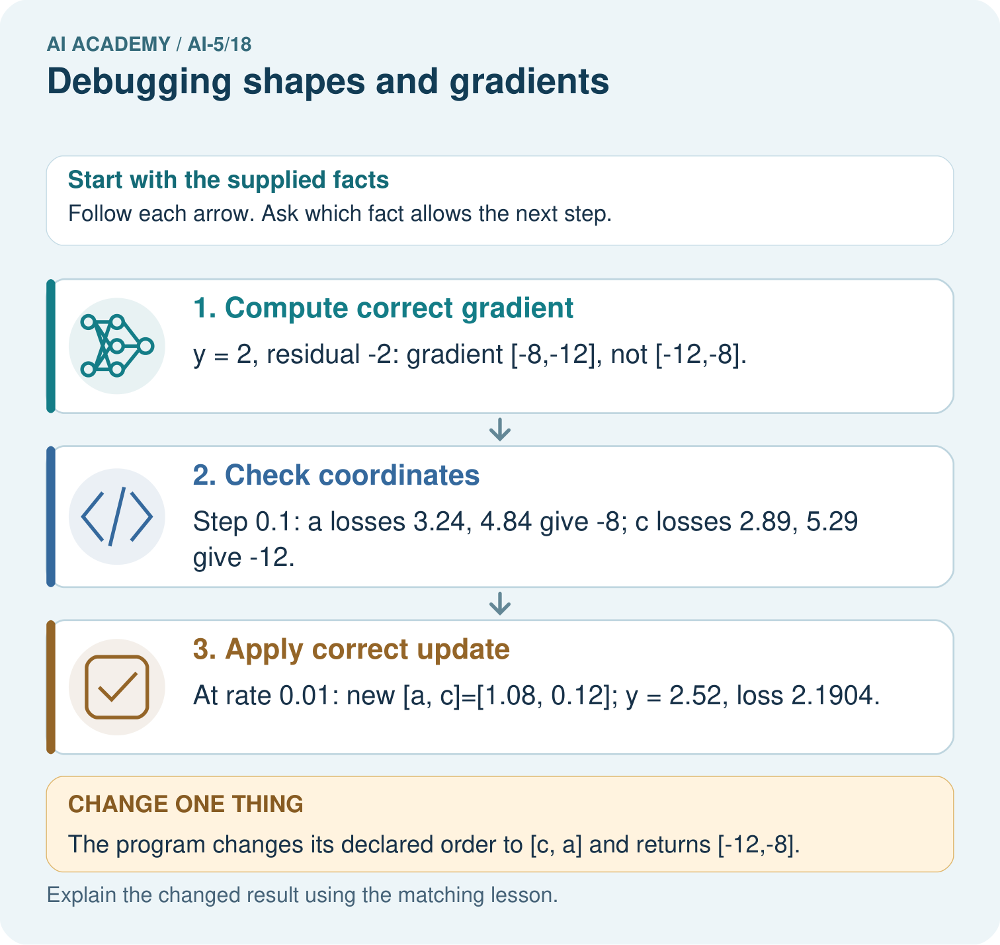
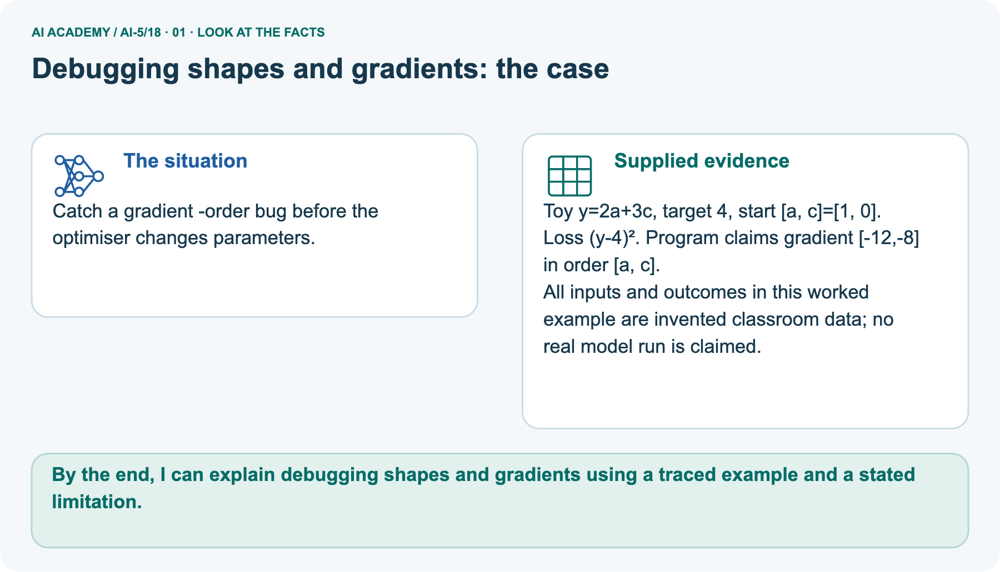
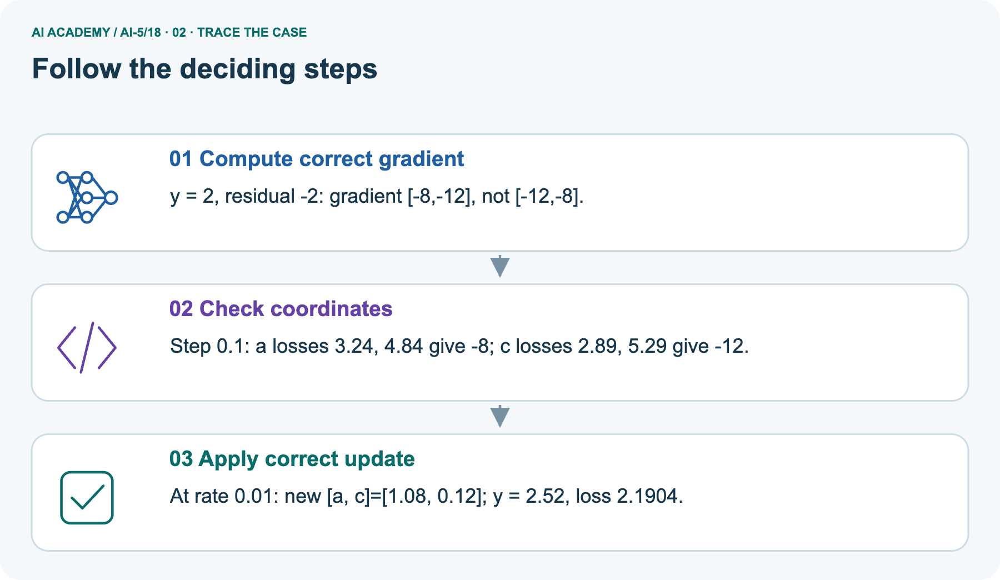
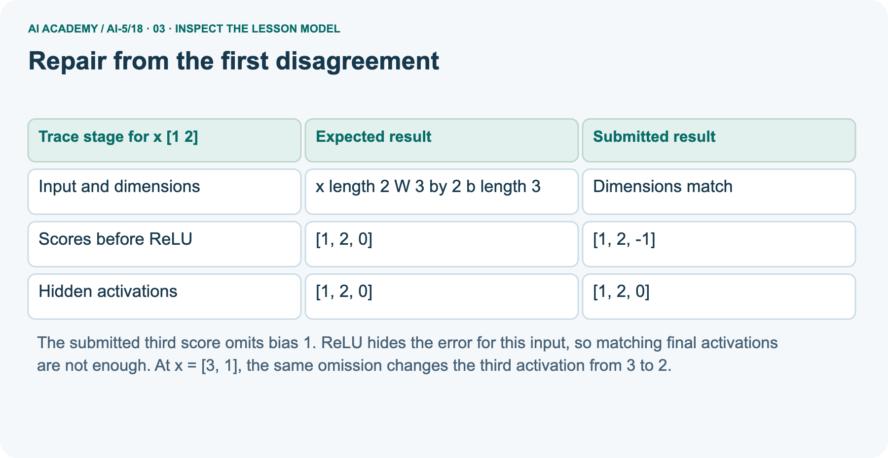
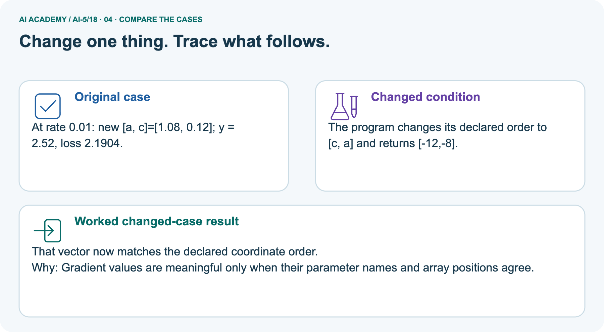
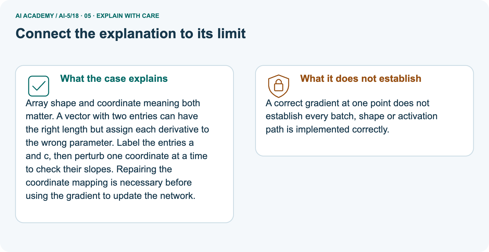

AI Academy · Level 5 · Grade 10 · Week 18 · Workbook
Debugging shapes and gradients
Learn to understand, design, build, test and explain AI systems responsibly.
Project: Image-pattern Network Investigation
Workbook · 1 of 15
Recall and choose your starting point
Record your starting explanation for Debugging shapes and gradients before opening notes. Show any later correction separately.
Try the recall before opening notes. Then use a different colour or a labelled second line to correct your explanation.
Initialisation and reproducibility
Without opening the old lesson, explain one key idea from Initialisation and reproducibility. Give an example and a mistake that the idea helps you avoid.
Training and validation curves
Without opening the old lesson, explain one key idea from Training and validation curves. Give an example and a mistake that the idea helps you avoid.
Training a small network
Without opening the old lesson, explain one key idea from Training a small network. Give an example and a mistake that the idea helps you avoid.
Lesson reference for workbook practice
Use this reference for the original W1–W3 and W5 exercises. The separately named independent case supplies its own changed facts; use those facts for that attempt before feedback.
For this lesson, a dense layer stores one output unit per weight-matrix row. If an input has two features and the layer has three units, W has three rows and two columns, b has length 3, and one input x has length 2.
Compute z for each unit, then apply ReLU to each component.
Use W rows [1, 0], [0, 1], [1, -1] and b = [0, 0, 1]. For x = [1, 2], the scores are [1, 2, 0] and the activations are [1, 2, 0].
A batch stores examples in rows: inputs [[1, 2], [3, 1]] have shape 2 by 2, and outputs have shape 2 by 3.
| Object | Declared shape | Meaning |
|---|---|---|
| One input x | Length 2 | Two features |
| Weights W | 3 by 2 | Three units each reading two features |
| Bias b | Length 3 | One bias per unit |
| Batch output | 2 by 3 | Two examples each with three activations |
Other software may use a transposed weight convention. The key is to record and follow one contract. An array with the right number of values can still be wrong if features or axes are swapped.
Workbook · 2 of 15
Practise with fading help
Complete the supported Debugging shapes and gradients trace and record the first step you can explain without help.
Use W2: Expose a hidden bias error for Debugging shapes and gradients. Record the answer once; the lesson and workbook refer to the same attempt.
| Given inputs | Procedure I chose | Middle steps | Result and check |
|---|---|---|---|
Workbook · 3 of 15
Individual reasoning check
Check the proposed Debugging shapes and gradients explanation against the supplied facts before discussing it.
Use the worked case for Debugging shapes and gradients. Proposed explanation: “Matching output shape guarantees the computation”. Decide whether this explanation is supported.
Point to the step or supplied fact that decides; explain your repair if needed.
Workbook · 4 of 15
Independent transfer case
Write one first attempt at the reserved independent case before feedback. Repeated copies of that case refer to the same recorded attempt.
Independent case: Debug a new gradient independently
Use y = 3a + c, target 2, loss (y - 2) squared, at [a, c] = [0, 1]. A program returns gradient [-2, -6] in order [a, c].
Use symmetric step 0.1 to check each coordinate, then update both with the corrected gradient and rate 0.05. Report new parameters and loss.
Attempt this case before feedback. Record any help. Earlier examples below are further practice; a case already practised with feedback cannot establish fresh transfer.
Workbook · 5 of 15
W1 Reject a shape mismatch
Reject a shape mismatch. Apply the supplied Debugging shapes and gradients facts and keep your reasoning.
The layer expects W shape 3 by 2, b length 3 and x length 2. A submitted x has length 3. Should the last feature be silently ignored? State the failed contract and repair process.
Workbook · 6 of 15
W2 Expose a hidden bias error
Expose a hidden bias error. Apply the supplied Debugging shapes and gradients facts and keep your reasoning.
Compute scores and activations for x = [3, 1] with the lesson layer, then omit the third bias. Identify the first discrepancy and the resulting activation error.
Workbook · 7 of 15
W3 Check an update sign
Check an update sign. Apply the supplied Debugging shapes and gradients facts and keep your reasoning.
For the diagnostic model at [1, 0], gradient [-4, -2] and rate 0.05, calculate the correct new parameters and loss. Compare with adding the gradient step.
Workbook · 8 of 15
W4 Debug a new gradient independently
Attempt before feedback. If this repeats the selected independent case, reuse that first attempt; otherwise keep a separate record. Debug a new gradient independently. Apply the supplied Debugging shapes and gradients facts and keep your reasoning.
Use y = 3a + c, target 2, loss (y - 2) squared, at [a, c] = [0, 1]. A program returns gradient [-2, -6] in order [a, c].
Use symmetric step 0.1 to check each coordinate, then update both with the corrected gradient and rate 0.05. Report new parameters and loss.
Workbook · 9 of 15
W5 Keep independent regression checks
Keep independent regression checks. Apply the supplied Debugging shapes and gradients facts and keep your reasoning.
A program passes only the x = [1, 2] final-activation test. Propose one intermediate-value check, one malformed-input check and one additional input that exposes the bias omission.
Workbook · 10 of 15
Project checkpoint and reflection
Connect Debugging shapes and gradients to Image-pattern Network Investigation, identify a limit and choose the next useful test.
Add a labelled debugging shapes and gradients evidence sheet to Image-pattern Network Investigation. Show how you can check dimension contracts before computing a layer.
Use the supplied fictional case and keep its inputs, intermediate steps, calculation or prediction, and limitation. Connect this record to last week’s record; a matching answer without a trace is insufficient.
Workbook · 11 of 15
Feedback, return check and learning record
Record the first repaired step and a different case to revisit after a delay.
| Evidence | My record |
|---|---|
| Worked alone / hint / model | |
| First step I repaired and why | |
| New case checked later; date and result | |
| What I can now explain without notes | |
| One remaining question |
Revisit this idea with your teacher after a delay. Familiarity is different from explaining and using it on a changed case.
Workbook · 12 of 15
Pictorial case practice: Debugging shapes and gradients
Catch a gradient -order bug before the optimiser changes parameters. Explain the labelled step before checking the changed condition.
Catch a gradient -order bug before the optimiser changes parameters.
Toy y=2a+3c, target 4, start [a, c]=[1, 0]. Loss (y-4)². Program claims gradient [-12,-8] in order [a, c].
All inputs and outcomes in this worked example are invented classroom data; no real model run is claimed.

What should a debugging record pair with every gradient value? Point to the relevant step in the picture, then write the changed result and the rule or evidence that supports it.
Record the help used
Support used: alone / hint / worked example. This record is practice evidence.
Project connection: For your Image-pattern Network Investigation, save the input, procedure, observed result and limitation of this check.
Label this worked example as practice; use a different, previously unreviewed case when checking independent understanding.
Workbook · 13 of 15
Project portfolio milestone
Keep this week’s input, deciding step, result and limit together in the Image-pattern Network Investigation record.
Project: Image-pattern Network Investigation
Current milestone: Test changed cases. Keep normal, boundary and failure cases; compare expected and observed results.
For your Image-pattern Network Investigation, save the input, procedure, observed result and limitation of this check.
Label this worked example as practice; use a different, previously unreviewed case when checking independent understanding.
| Evidence to keep | My record |
|---|---|
| This week’s input and deciding step | |
| Prediction and actual result (or labelled paper trace) | |
| One change since the previous checkpoint and why | |
| One error or limit and the next test |
Workbook · 14 of 15
Supported practice and learning evidence
Try the supported questions before comparing with hints and feedback. Record what you repaired and the evidence you retained.
Use this supported practice once, in the browser or on paper. Keep the reserved independent assessment for a separate first attempt before teacher feedback.
Catch a gradient -order bug before the optimiser changes parameters.
Practice 1: explain the deciding evidence
Which labelled step matches this detail? At rate 0.01: new [a, c]=[1.08, 0.12]; y = 2.52, loss 2.1904.
1. Compute correct gradient
2. Check coordinates
3. Apply correct update
Hint · try first
Hint if needed: Read the steps in the pictorial case. Match the supplied detail to the stage that performs or records it.
Feedback · compare after trying
After your attempt, compare with the supported explanation: Apply correct update At rate 0.01: new [a, c]=[1.08, 0.12]; y = 2.52, loss 2.1904. Array shape and coordinate meaning both matter.
A vector with two entries can have the right length but assign each derivative to the wrong parameter. Label the entries a and c, then perturb one coordinate at a time to check their slopes.
Repairing the coordinate mapping is necessary before using the gradient to update the network.
Practice 2: explain the deciding evidence
Changed case · predict first
Changed-case practice: The program changes its declared order to [c, a] and returns [-12,-8]. Which conclusion is supported by the supplied facts?
1. This one example guarantees correct results for every future input.
2. That vector now matches the declared coordinate order.
3. We can decide the result without examining the changed input or the procedure.
Hint · try first
Hint if needed: Use the changed condition and the deciding step in the pictorial trace. The answer must say what follows from those facts.
Feedback · compare after trying
After your attempt, compare with the supported explanation: That vector now matches the declared coordinate order. Gradient values are meaningful only when their parameter names and array positions agree.
Repair a missing building block
Review Initialisation and reproducibility (ai-5/17). Goal: Trace how starting values affect a fixed training budget. Short practice: Does the matching final loss mean the parameter values are equal?
Point to the relevant step in the picture, then write the changed result and the rule or evidence that supports it.. Return to this week and explain what you changed.
Review Training and validation curves (ai-5/15). Goal: Compute comparable training and validation losses at saved checkpoints. Short practice: Can the original epoch 3 training loss 1 justify claiming best generalisation?
Point to the relevant step in the picture, then write the changed result and the rule or evidence that supports it.. Return to this week and explain what you changed.
Review Training a small network (ai-5/12). Goal: Trace repeated forward loss gradient and update steps. Short practice: Which parameter changed, and which part was not trained?
Point to the relevant step in the picture, then write the changed result and the rule or evidence that supports it.. Return to this week and explain what you changed.
Predict, run and debug
The browser lab lets you edit the supported Python examples already included in this lesson. Predict first, run, inspect the actual output or error, change one input, then run again.
Keep code, predictions, actual results and a reasoned revision together. On paper, label your result as a trace rather than an execution.
Keep your completed work
Use Download completed work in the hosted lesson to export your answers, reflections, practice feedback and code-run evidence. Open the HTML copy to read or print it.
Drafts stay in this browser when storage is available; clear drafts on a shared device.
Workbook · 15 of 15
Visual concept journey
Explain each Debugging shapes and gradients picture from its labels, then record a relevant limit.
01. Debugging shapes and gradients: the case

Catch a gradient -order bug before the optimiser changes parameters. Supplied facts: Toy y=2a+3c, target 4, start [a, c]=[1, 0]. Loss (y-4)². Program claims gradient [-12,-8] in order [a, c].
All inputs and outcomes in this worked example are invented classroom data; no real model run is claimed.
Point to the given fact that matters most. Explain why it matters.
02. Follow the deciding steps

Compute correct gradient: y = 2, residual -2: gradient [-8,-12], not [-12,-8]. → Check coordinates: Step 0.1: a losses 3.24, 4.84 give -8; c losses 2.89, 5.29 give -12. → Apply correct update: At rate 0.01: new [a, c]=[1.08, 0.12]; y = 2.52, loss 2.1904.
Point to each numbered stage and explain which recorded input it uses.
03. Repair from the first disagreement

Repair from the first disagreement. Input and dimensions | x length 2 W 3 by 2 b length 3 | Dimensions match. Scores before ReLU | [1, 2, 0] | [1, 2, -1]. Hidden activations | [1, 2, 0] | [1, 2, 0]
Read the labels and values. Explain the relationship the model shows.
04. Change one thing. Trace what follows.

Original case: At rate 0.01: new [a, c]=[1.08, 0.12]; y = 2.52, loss 2.1904. Changed condition: The program changes its declared order to [c, a] and returns [-12,-8].
Expected result: That vector now matches the declared coordinate order. Reason: Gradient values are meaningful only when their parameter names and array positions agree.
Predict before checking the worked changed-case result. Name what changed and what the supplied facts allow you to conclude.
05. Connect the explanation to its limit

Array shape and coordinate meaning both matter. A vector with two entries can have the right length but assign each derivative to the wrong parameter.
Label the entries a and c, then perturb one coordinate at a time to check their slopes. Repairing the coordinate mapping is necessary before using the gradient to update the network.
Limit: A correct gradient at one point does not establish every batch, shape or activation path is implemented correctly.
Explain the case, then point to a limit on the claim.
06. Make the idea visible in your project

For your Image-pattern Network Investigation, save the input, procedure, observed result and limitation of this check.
Label this worked example as practice; use a different, previously unreviewed case when checking independent understanding. Draw your input, deciding step, result and limit.
Supported question: What should a debugging record pair with every gradient value? Point to the relevant step in the picture, then write the changed result and the rule or evidence that supports it.
Draw your project trace and justify the deciding step using evidence.